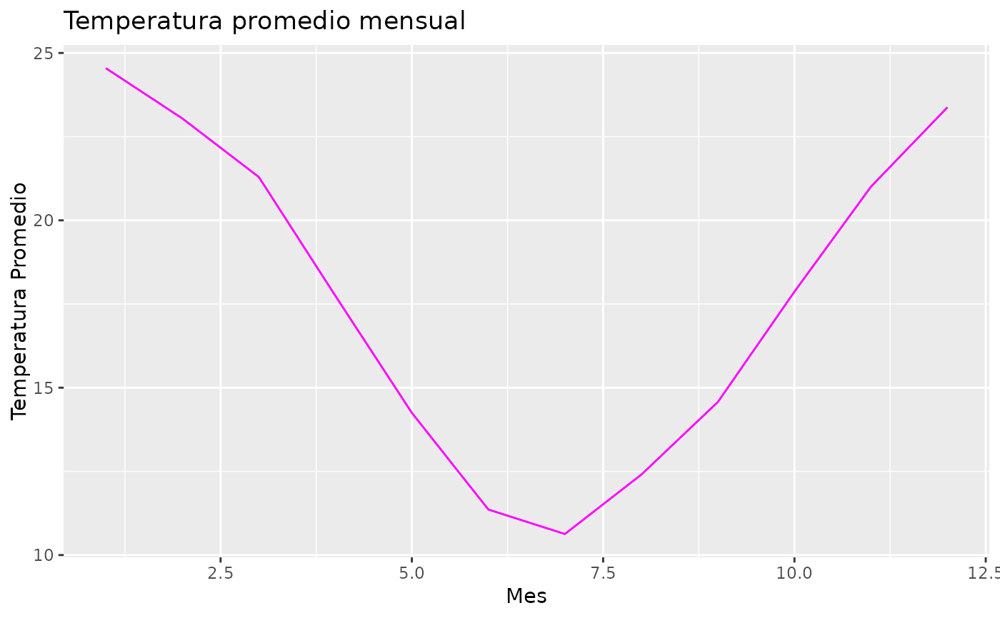
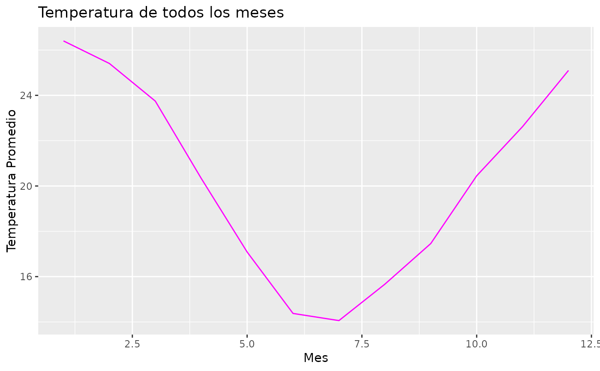
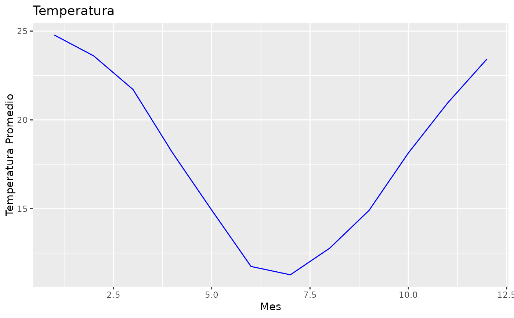
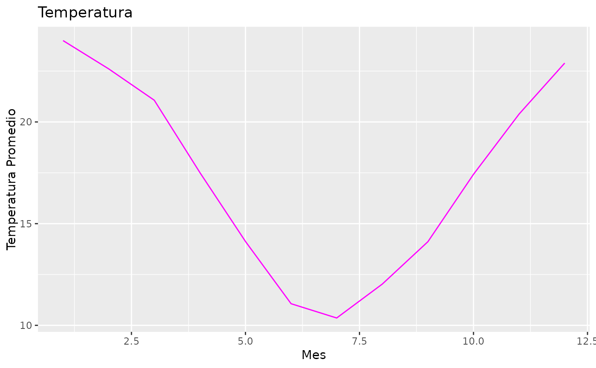

La función grafico_temperatura_mensual() toma como argumento un dataframe,
calcula el promedio de la temperatura de cada mes y lo grafica
Usage
grafico_temperatura_mensual(
dataframe,
color = "magenta",
titulo = "Temperatura"
)
Arguments
- dataframe
nombre del dataframe a utilizar
- color
(opcional) color que desea utilizar en el gráfico, expresado en
rgb, hsvy, hcl, o el nombre del color en inglés
- titulo
(opcional) el nombre asignado para el gráfico escrito entre comillas
Value
gráfico de puntos indicando el promedio de la temperatura a lo largo del año
Examples
grafico_temperatura_mensual(NH0910, color = "magenta", titulo = "Temperatura promedio mensual")

grafico_temperatura_mensual(NH0437, titulo = "Temperatura de todos los meses")

grafico_temperatura_mensual(NH0472, color = "blue")

grafico_temperatura_mensual(NH0046)
